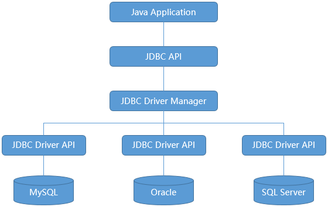
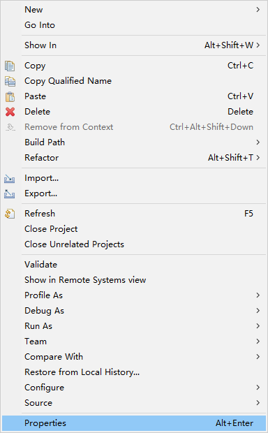
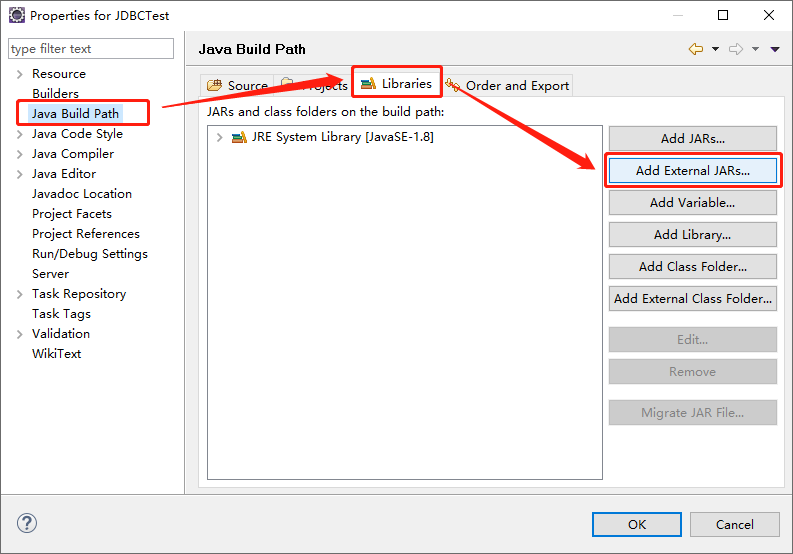
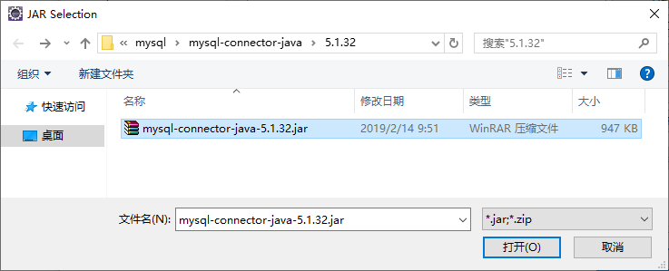
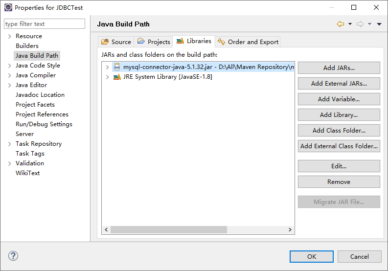

摘要：本文主要学习了如何使用JDBC连接数据库。
数据持久化就是把数据保存到可掉电式存储设备中以供之后使用。大多数情况下，特别是企业级应用，数据持久化意味着将内存中的数据保存到硬盘上加以“固化”，而持久化的实现过程大多通过各种关系数据库来完成。
持久化的主要应用是将内存中的数据存储在关系型数据库中，当然也可以存储在磁盘文件、XML数据文件中。
JDBC的全称是Java Database Connectivity，意为Java和数据库的连接。
JDBC是SUN公司提供的一套操作数据库的接口规范，定义了用来访问数据库的标准Java类库，使用这个类库可以更加方便地访问数据库资源。
程序员在使用数据库的时候，需要安装数据库驱动，不同的数据库的驱动也是不同的。所以为了程序员开发方便，SUN公司提供了一套接口，让数据库厂商实现这些接口，程序员只需要使用这个接口就可以操作不同的数据库，不需要关注底层数据库驱动的安装，从而大大简化和加快了开发过程。
JDBC接口包括两个层次：
JDBC API：即面向应用的API，是一个抽象的接口，供应用程序开发人员使用，提供了程序到JDBC管理器的连接。
JDBC Driver API：即面向数据库驱动的API，需要开发商去实现这个接口，提供了JDBC管理器到数据库驱动程序的连接。

主要有四个核心对象：
DriverManager类(java.sql.DriverManager)：用于注册驱动，创建连接对象。
Connection接口(java.sql.Connection)：表示与数据库创建的连接。
Statement接口(java.sql.Statement)：执行数据库SQL语句，并返回相应结果的对象。
ResultSet接口(java.sql.ResultSet)：结果集或一张虚拟表，用于存储表数据的对象。
其中，Statement接口还有两个子接口：
PreparedStatement接口(java.sql.PreparedStatement)：预编译对象，是Statement接口的子接口，用于解决sql的注入问题。
CallableStatement接口(java.sql.CallableStatement)：支持带参数的SQL操作，支持调用存储过程，是PreparedStatement接口的子接口。
下面的说明以连接MySQL数据库为例。
拥有一个可以正常访问的MySQL数据库，已经可以登录使用的用户名和密码。
建立一个准备连接数据库的项目。
导入Java连接MySQL所用到的jar包，这个jar包通常是由数据库的厂商提供的，这里下载的是 mysql-connector-java-5.1.32.jar 这个包。
那Eclipse为例，在项目上右键，然后点击Properties：

然后在弹出的页面左侧找到 Java Build Path 目录并进入，选择 Libraries 标签页，找到标签页右侧的 Add External JARs... 按钮：

找到下载的jar包，点击打开：

可以看到jar包被成功导入到项目中：

点击OK完成导入。
加载数据库驱动的方法是调用Class类的静态方法forName。语法格式如下：
1 public static Class<?> forName(String className)其中，传入的参数className是每个数据库厂商各自提供的一个驱动程序名称。
不同的数据库，驱动程序名称如下：
1 MySQL驱动：com.mysql.jdbc.Drive
2 Oracle驱动：oracle.jdbc.driver.OracleDriver
3 SQLServer驱动：com.microsoft.sqlserver.jdbc.SQLServerDriver
4 PostgreSQL驱动：org.postgresql.Driver
5 DB2驱动：com.ibm.db2.jdbc.net.DB2Driver
6 Sybase驱动：com.sybase.jdbc.SybDriver使用DriverManager类的静态方法getConnection建立到指定数据库的连接。语法格式如下：
1 public static Connection getConnection(String url, String user, String password)url是SUN公司与数据库厂商之间的一种协议，user是连接数据库的用户名，password是用户名对应的密码。
不同的数据库，url协议的格式如下：
1 MySQL格式：jdbc:mysql://地址或主机名:端口号/数据库名
2 Oracle格式：jdbc:oracle:thin:@地址或主机名:端口号:数据库名
3 SQLServer格式：jdbc:sqlserver://地址或主机名:端口号;databaseName=数据库名
4 PostgreSQL格式：jdbc:postgresql://地址或主机名:端口号/数据库名
5 DB2格式：jdbc:db2:地址或主机名:端口号/数据库名
6 Sybase格式：jdbc:sybase:Tds:地址或主机名:端口号/数据库名如果是在本机并且用的是默认的端口号，可以将地址和端口号省略：
1 jdbc:mysql:///数据库名建议url中的文件编码、数据库连接编码、数据库编码保持一致，向数据库中添加数据时，连接参数最好包含Unicode字符支持，这样添加的字符就能被数据库识别并且正常显示了：
1 jdbc:mysql://地址或主机名:端口号/数据库名?useUnicode=true&characterEncoding=UTF-8至此，就成功获取到了连接MySQL数据库的Connection对象。
获取到连接之后，使用Connection接口的createStatement方法获取Statement对象。语法格式如下：
1 Statement createStatement()获取到了Statement对象之后，使用executeQuery方法执行查询语句得到ResultSet类型的结果集，使用executeUpdate方法执行增加、删除、修改语句得到int类型的记录数。
数据库连接Connection是非常稀有的资源，用完后必须马上释放，如果Connection不能及时正确的关闭将导致系统宕机。Connection的使用原则是尽量晚创建，尽量早的释放。
释放的方法是通过调用Connection的close方法，语法格式如下：
1 void close()一次完整的操作数据库的流程包括加载驱动、建立连接、执行语句、释放连接。其中，加载驱动只执行一次即可，建立的连接用完之后必须马上释放。
完整代码如下：
1 public static void main(String[] args) {
2 try {
3 Class.forName("com.mysql.jdbc.Driver");
4 } catch (ClassNotFoundException e) {
5 e.printStackTrace();
6 }
7 Connection conn = null;
8 try {
9 String url = "jdbc:mysql://192.168.35.128:3306/demo";
10 String user = "root";
11 String password = "123456";
12 conn = DriverManager.getConnection(url, user, password);
13 } catch (Exception e) {
14 e.printStackTrace();
15 } finally {
16 try {
17 conn.close();
18 } catch (SQLException e) {
19 e.printStackTrace();
20 }
21 }
22 }配置文件 jdbc.properties 在 src 目录下，和当前的源文件的根目录 package jdbc; 平级，内容如下：
1 driverClass=com.mysql.jdbc.Driver
2 url="jdbc:mysql://192.168.35.128:3306/demo"
3 user=root
4 password=123456完整代码如下：
1 public static void main(String[] args) {
2 Properties pros = new Properties();
3 try {
4 pros.load(TestConnection.class.getClassLoader().getResourceAsStream("jdbc.properties"));
5 } catch (IOException e) {
6 e.printStackTrace();
7 }
8 try {
9 Class.forName(pros.getProperty("driverClass"));
10 } catch (ClassNotFoundException e) {
11 e.printStackTrace();
12 }
13 Connection conn = null;
14 try {
15 String url = pros.getProperty("url");
16 String user = pros.getProperty("user");
17 String password = pros.getProperty("password");
18 conn = DriverManager.getConnection(url, user, password);
19 } catch (Exception e) {
20 e.printStackTrace();
21 } finally {
22 try {
23 conn.close();
24 } catch (SQLException e) {
25 e.printStackTrace();
26 }
27 }
28 }使用实例：
1 public static void main(String[] args) {
2 try {
3 Class.forName("com.mysql.jdbc.Driver");
4 } catch (ClassNotFoundException e) {
5 e.printStackTrace();
6 }
7 Connection conn = null;
8 Statement stmt = null;
9 ResultSet rs = null;
10 try {
11 String url = "jdbc:mysql://192.168.35.128:3306/demo";
12 String user = "root";
13 String password = "123456";
14 conn = DriverManager.getConnection(url, user, password);
15 stmt = conn.createStatement();
16 rs = stmt.executeQuery("select * from student");
17 while (rs.next()) {
18 System.out.println(rs.getInt("id") + "\t" + rs.getString(2) + "\t" + rs.getString(3) + "\t" + rs.getString("address"));
19 }
20 } catch (Exception e) {
21 e.printStackTrace();
22 } finally {
23 try {
24 rs.close();
25 } catch (SQLException e) {
26 e.printStackTrace();
27 }
28 try {
29 stmt.close();
30 } catch (SQLException e) {
31 e.printStackTrace();
32 }
33 try {
34 conn.close();
35 } catch (SQLException e) {
36 e.printStackTrace();
37 }
38 }
39 }使用实例：
1 public static void main(String[] args) {
2 try {
3 Class.forName("com.mysql.jdbc.Driver");
4 } catch (ClassNotFoundException e) {
5 e.printStackTrace();
6 }
7 Connection conn = null;
8 Statement stmt = null;
9 try {
10 String url = "jdbc:mysql://192.168.35.128:3306/demo";
11 String user = "root";
12 String password = "123456";
13 conn = DriverManager.getConnection(url, user, password);
14 stmt = conn.createStatement();
15 int count = stmt.executeUpdate("delete from student where id = 903");
16 System.out.println("受影响的行数：" + count);
17 } catch (Exception e) {
18 e.printStackTrace();
19 } finally {
20 try {
21 stmt.close();
22 } catch (SQLException e) {
23 e.printStackTrace();
24 }
25 try {
26 conn.close();
27 } catch (SQLException e) {
28 e.printStackTrace();
29 }
30 }
31 }Statement接口是通过Connection的createStatement方法获取的，用来执行SQL语句并返回相应的结果。语法格式如下：
1 Statement createStatement()使用完之后需要手动关闭Statement对象。
PreparedStatement接口是通过Connection的preparedStatement方法获取的，是Statement的子接口，表示一条预编译过的SQL语句。语法格式如下：
1 PreparedStatement prepareStatement(String sql)传入的SQL语句中的参数用问号“?”来表示，调用PreparedStatement对象的setXxx方法来设置这些参数。setXxx方法有两个参数，第一个参数是要设置的参数索引（从1开始），第二个是设置的参数值。
使用Statement可能会因为字符串拼接导致被人SQL注入攻击，但使用PreparedStatement不需要拼接字符串，而是使用占位符的方法，有效避免了SQL注入攻击的问题。
使用举例：
1 pstmt = conn.prepareStatement("select * from student where id = ?");
2 pstmt.setInt(1, 904);
3 rs = pstmt.executeQuery();
4 while (rs.next()) {
5 System.out.println(rs.getString(1) + "\t" + rs.getString(2) + "\t" + rs.getString(3) + "\t" + rs.getString("address"));
6 }使用Statement接口的executeQuery方法执行传入的查询语句，并得到ResultSet类型的结果集。语法格式如下：
1 ResultSet executeQuery(String sql)ResultSet接口由数据库厂商实现，以逻辑表格的形式封装了执行数据库操作的结果集。
ResultSet对象维护了一个指向当前数据行的游标，游标默认从1开始，可以通过next方法移动到下一行。
使用完之后需要手动关闭ResultSet对象。
常用方法：
1 byte getByte(int columnIndex) throws SQLException;
2 byte getByte(String columnLabel) throws SQLException;
3 byte[] getBytes(int columnIndex) throws SQLException;
4 byte[] getBytes(String columnLabel) throws SQLException;
5 short getShort(int columnIndex) throws SQLException;
6 short getShort(String columnLabel) throws SQLException;
7 int getInt(int columnIndex) throws SQLException;
8 int getInt(String columnLabel) throws SQLException;
9 long getLong(int columnIndex) throws SQLException;
10 long getLong(String columnLabel) throws SQLException;
11 float getFloat(int columnIndex) throws SQLException;
12 float getFloat(String columnLabel) throws SQLException;
13 double getDouble(int columnIndex) throws SQLException;
14 double getDouble(String columnLabel) throws SQLException;
15 String getString(int columnIndex) throws SQLException;
16 String getString(String columnLabel) throws SQLException;
17 boolean getBoolean(int columnIndex) throws SQLException;
18 boolean getBoolean(String columnLabel) throws SQLException;
19 java.sql.Date getDate(int columnIndex) throws SQLException;
20 java.sql.Date getDate(String columnLabel) throws SQLException;
21 java.sql.Time getTime(int columnIndex) throws SQLException;
22 java.sql.Time getTime(String columnLabel) throws SQLException;
23 java.sql.Timestamp getTimestamp(int columnIndex) throws SQLException;
24 java.sql.Timestamp getTimestamp(String columnLabel) throws SQLException;
25 Object getObject(int columnIndex) throws SQLException;
26 Object getObject(String columnLabel) throws SQLException;
27
28 boolean next() throws SQLException;
29 void close() throws SQLException;
30
31 ResultSetMetaData getMetaData() throws SQLException;使用举例：
1 stmt = conn.createStatement();
2 rs = stmt.executeQuery("select * from student");
3 while (rs.next()) {
4 System.out.println(rs.getInt("id") + "\t" + rs.getString(2) + "\t" + rs.getString(3) + "\t" + rs.getString("address"));
5 }ResultSetMetaData对象可以用来获取ResultSet对象中列的类型和属性信息。
常用方法：
1 int getColumnCount() throws SQLException;
2 int getColumnTypeName(int column) throws SQLException;
3 String getColumnLabel(int column) throws SQLException;
4 String getColumnName(int column) throws SQLException;使用举例：
1 stmt = conn.createStatement();
2 rs = stmt.executeQuery("select * from student");
3 while (rs.next()) {
4 ResultSetMetaData rsmd = rs.getMetaData();
5 System.out.println(rsmd.getColumnName(1) + "=" + rs.getInt("id") + "\t" + rsmd.getColumnName(2) + "=" + rs.getString(2));
6 }